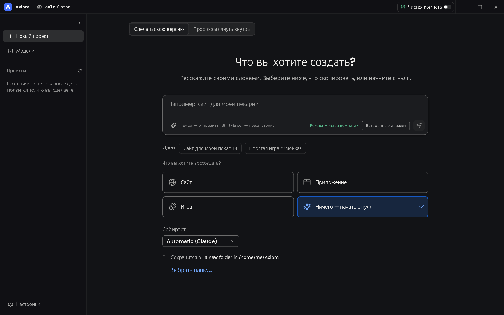

macOS
Apple silicon, образ диска.
Скачать .dmgОткрытый код · Rust · Ранняя разработка
Укажите Axiom приложение, игру, сайт или файл. Задайте вопрос и получите ответ с доказательствами: что увидели, что вывели и что пока неизвестно. Затем пусть ИИ-агент соберёт и проверит вашу версию.

Скачать
Ранние сборки, пока без подписи и нотаризации. В каждой есть сервер локальных моделей, помощник Unicorn (GPL-2.0, исходники приложены) и, где позволяет система, Ghidra с Java.
Apple silicon, образ диска.
Скачать .dmg64-бит. Установщик несёт само приложение; переносной zip ещё и Ghidra, Java и сервер моделей.
Скачать .msi Переносной .zip64-бит, AppImage, .deb или .rpm.
Скачать AppImage .deb .rpmПриложение для телефона, arm64: смотрит внутрь приложений и общается с вашим сервером моделей.
Скачать .apkВсе файлы и контрольные суммы — на странице выпусков. Пока сборка не опубликована, кнопка открывает эту страницу.
Как это работает
Откройте программу, APK, игру, сайт или файл. Axiom читает его устройство собственными анализаторами на Rust; Ghidra — необязательное дополнение.
Каждый результат — запись с доказательствами: что наблюдали, что вывели, насколько это надёжно и что проверить не удалось.
Агент изучает доказательства, собирает отдельный проект и сверяет его с оригиналом, держа открытые вопросы у вас перед глазами.
Что в комплекте
Настольное приложение, командная строка и сервер MCP для кодирующих агентов вызывают одни и те же инструменты, поэтому всё, что можно нажать, можно и автоматизировать.
Форматы ELF, PE, Mach-O, WebAssembly, DEX, APK, бандлы Electron и другие, с дизассемблированием, графами вызовов и псевдо-C на Rust.
Попробуйте несколько инструкций, не запуская их на своём компьютере. Помощник на Unicorn — отдельная программа с ограничениями по инструкциям, времени и памяти.
Пока вы не включите режим Deep, Axiom лишь наблюдает снаружи, как посетитель или пользователь, и никогда не заглядывает внутрь оригинала.
Никаких паник в рабочем коде, ограниченная рекурсия и ограниченные выделения памяти: файлы, которые изучают, умеют сопротивляться.
Локальный ИИ
Выберите рекомендованную модель, которая подходит по памяти вашему компьютеру, или найдите GGUF на Hugging Face. Загрузки сверяются с SHA-256 самого хаба. Axiom запускает сервер llama.cpp на свободном порту, доступном только на вашем компьютере, и добавляет его как ИИ, который можно выбрать в поле ввода.
models_hub_searchmodels_file_downloadmodels_server_startПроверено на macOS arm64 с Llama 3.2 1B: установка, загрузка с проверкой хеша, запуск, ответ, остановка. Другие системы пока не проверены.
Платформы
Ранние сборки появляются на странице выпусков после завершения сборки пакетов; иначе собирайте из исходников.
Статус и лицензии
Axiom построен на Craft Anything (MIT или Apache-2.0). Не все унаследованные функции перепроверены здесь.
Axiom — MIT или Apache-2.0. Помощник Unicorn — только GPL-2.0, поставляется отдельной программой с исходниками. У моделей свои лицензии.
Подписанные и нотаризованные выпуски, ручные проверки на Linux и Windows, Android-клиент-компаньон и юридическая проверка GPL-помощника.
Читайте код, следите за работой или помогайте её делать.
Открыть репозиторий